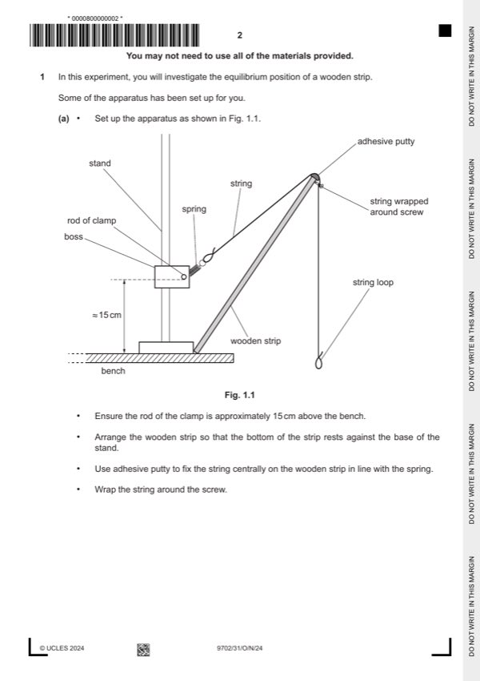

Question 1

Original paper page 2
Part 1(a) — solution
Value(s) of raw 0 to the nearest degree and final 0 value in the range 75° ⩽ o ⩽ 85°. 1
Mark points
- Include the ideas shown in the solution above.
Part 1(b) — solution
Value of m in range 3.0 g ⩽ m ⩽ 6.0 g with unit and to at least 0.1 g. 1
Mark points
- Include the ideas shown in the solution above.
Part 1(c) — solution
Correct calculation of e with correct unit. 1
Mark points
- Include the ideas shown in the solution above.
Part 1(d) — solution
Six (or more) sets of readings of M (different values) and with correct trend (as M increases, decreases) and without 4
help from supervisor scores 4 marks, five sets scores 3 marks etc.
Range: Mmax – Mmin ⩾ 30 g. 1
Column headings: 1
Each column heading must contain a quantity and a unit where appropriate.
The presentation of quantity and unit must conform to accepted scientific convention e.g. L / cm , M / g , e / cm, / °, sin .
Consistency: 1
All values of raw L must be given to the nearest mm.
Significant figures: 1
Values of sin must be given to the same number of s.f. (or one more than) the number of s.f. in the corresponding raw
values.
Calculation: Values of sin are correct. 1
University Press & Assessment 2024 Page 5 of 9
9702/31 Cambridge International AS & A Level – Mark Scheme October/November 2024
Mark points
- Include the ideas shown in the solution above.
Part 1(e)(i) — solution
Axes: 1
Axes must be labelled with the required quantities.
Scales must be chosen so that the plotted points occupy at least half the graph grid in both the x and y directions.
Scale markings are no more than 2 cm (one large square) apart.
Sensible scales must be used, no awkward scales (e.g. 3:10 or fractions).
Plotting of points: 1
All observations in the table must be plotted on the grid.
Diameter of plotted points must be ⩽ half a small square.
Points must be plotted to an accuracy of half a small square in both x and y directions.
Quality: 1
Trend of points must be negative.
All points in the table must be plotted (at least 5) on the grid for this mark to be awarded.
It must be possible to draw a straight line that is within 0.25 cm (to scale) on the e axis (normally y-axis) of all plotted
points.
Mark points
- Include the ideas shown in the solution above.
Part 1(e)(ii) — solution
Line of best fit: 1
‘Best fit’ is judged by the balance of all points on the grid (at least 5 points on the grid) about the candidate’s line.
There must be an even distribution of points either side of the line along the full length.
Lines must not be kinked or thicker than half a small square.
Some candidates may choose to identify an anomalous point. If they identify one point as anomalous (e.g. by circling or
labelling) then this point is to be disregarded when judging the line of best fit. There must be at least five points left after the
anomalous point is disregarded.
University Press & Assessment 2024 Page 6 of 9
9702/31 Cambridge International AS & A Level – Mark Scheme October/November 2024
Mark points
- Include the ideas shown in the solution above.
Part 1(e)(iii) — solution
- Intercept read directly from the graph, with read-off at sin = 0, accurate to half a small square in y direction
- Correct read-off from a point on the line is substituted correctly into y = mx + c or an equivalent expression
Mark points
- Intercept read directly from the graph, with read-off at sin = 0, accurate to half a small square in y direction
- Correct read-off from a point on the line is substituted correctly into y = mx + c or an equivalent expression
Part 1(f) — solution
- P = candidate’s gradient value and Q = candidate’s intercept value. 1
Mark points
- P = candidate’s gradient value and Q = candidate’s intercept value. 1
Part 1 — solution
mark for each point up to a maximum of 4.
Mark points
- Include the ideas shown in the solution above.
Part 1 — solution
mark for each point up to a maximum of 4.
University Press & Assessment 2024 Page 9 of 9
Mark points
- Include the ideas shown in the solution above.